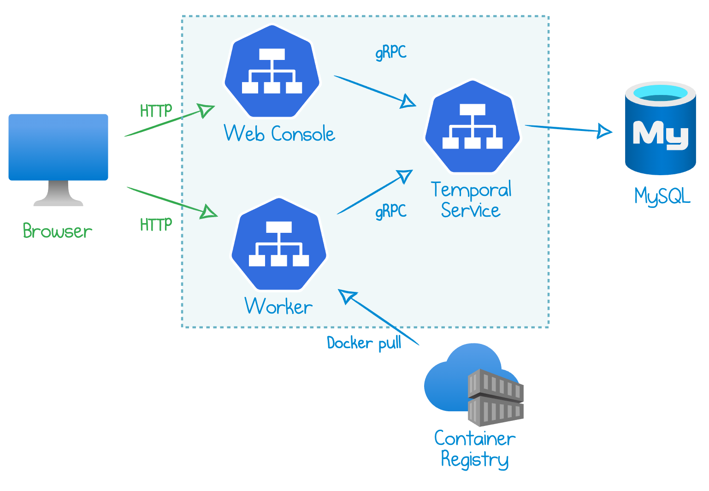

How To Deploy Temporal to Azure Kubernetes Service (AKS)
In my article A Practical Approach to Temporal Architecture, I outlined the various Temporal components and how they interact. Today’s blog builds on this knowledge and demonstrates an example of deploying Temporal to Kubernetes and, more specifically, to Azure Kubernetes Service (AKS).
My example is self-contained: it provisions a full environment with all the required Azure resources, Temporal service, and application deployment artifacts. Here is a diagram of the cloud infrastructure:

This sample deployment is implemented as a Pulumi program in TypeScript. You can find the full code in my GitHub.
Application Code
The workflow folder contains all of the application code. The application is written with Go and consists of two source files:
helloworld.go- defines a workflow & activitymain.go- application entry point.
The example deploys a “Hello World” Temporal application copied from this Go sample. Once you get it up and running, you can certainly customize the code with your own workflow and activities.
The main.go file does two things.
First, it spins up a worker:
w := worker.New(c, "hello-world", worker.Options{})
w.RegisterWorkflow(helloworld.Workflow)
w.RegisterActivity(helloworld.Activity)
Second, it launches an HTTP server in the same process. The server exposes endpoints to start workflows. The /async?name=<yourname> endpoint starts a new workflow and immediately returns, while the /sync?name=<yourname> blocks and waits for the result of the execution and returns the response.
You can find the implementation in the start function. Note that this simplistic starter is specifc to the “Hello World” workflow as it expects one argument and one result, both strings.
Deployment Structure
My program combines three component resources: a MySQL Database, an AKS cluster, and a Temporal deployment. As a result, the main file deploy all of these resources to a single Azure Resource Group:
const resourceGroup = new resources.ResourceGroup("resourceGroup", {
resourceGroupName: resourceGroupName,
location: "WestEurope",
});
const database = new MySql("mysql", {
resourceGroupName: resourceGroup.name,
location: resourceGroup.location,
administratorLogin: "mikhail",
administratorPassword: mysqlPassword,
});
const cluster = new AksCluster("aks", {
resourceGroupName: resourceGroup.name,
location: resourceGroup.location,
kubernetesVersion: "1.16.13",
vmSize: "Standard_DS2_v2",
vmCount: 3,
});
const temporal = new Temporal("temporal", {
resourceGroupName: resourceGroup.name,
location: resourceGroup.location,
version: "1.1.1",
storage: {
type: "mysql",
hostName: database.hostName,
login: database.administratorLogin,
password: database.administratorPassword,
},
cluster: cluster,
app: {
namespace: "temporal",
folder: "./workflow",
port: 8080,
},
});
export const webEndpoint = temporal.webEndpoint;
export const starterEndpoint = temporal.starterEndpoint;
The rest of the article gives an overview of the building blocks of these three components.
Docker Image
Since the application is deployed to Kubernetes, we need to produce a custom Docker image. The Dockerfile builds the Go application and exposes port 8080 to the outside world so we can access the starter HTTP endpoints.
Pulumi deploys this Dockerfile to Azure in three steps:
- Deploy an Azure Container Registry.
- Retrieve the registry’s admin credentials generated by Azure.
- Publish the application image to the registry.
MySQL Database
There are several persistence options supported by Temporal. A straightforward option for Azure users is to deploy an instance of Azure Database for MySQL. It’s a fully managed database service where Azure is responsible for uptime and maintenance, and users pay a flat fee per hour.
My example provisions an instance of MySQL 5.7 at the Basic tier. The database size is limited to 5 GB.
A final tweak is to add a firewall rule for the IP address 0.0.0.0, which enables network access to MySQL from any Azure service. Note that this option isn’t secure for production workloads: read more in Connecting from Azure.
Azure Kubernetes Cluster
The example creates a new AKS cluster and deploys the Temporal service and applications components to that cluster.
The AksCluster component:
- Sets up an Azure Active Directory Application and a Service Principal.
- Creates an SSH key for the cluster’s admin user profile.
- Provisions a managed Kubernetes cluster base on VM Scale Sets node pool. Feel free to adjust the VM size, count, and the Kubernetes version.
- Builds the Kubeconfig YAML to connect to the cluster and deploy application components.
Temporal Service and Web Console
Next, we deploy the Temporal Service and Temporal Web Console as two Kubernetes services.
We start with sound groundwork:
- Declare a custom Pulumi Kubernetes provider and point it to the Kubeconfig string that we retrieved from the managed cluster.
- Grant permission for the managed cluster’s service principal to access images from the Azure Container Registry.
- Define a new Kubernetes namespace that contains all Temporal deployments and services.
Then, we can deploy the Temporal Service:
- Stores the MySQL password as a Kubernetes secret.
- Refers to the
temporalio/auto-setupDocker image provided by Temporal. The image automatically populates the database schema during the first run. - Sets up environment variables to connect to MySQL.
- Deploys a
ClusterIPservice using port7233.
The Web Console follows:
- Refers to the
temporalio/webDocker image provided by Temporal. - Connects to the gRPC endpoint of the Temporal Service.
- Deploys a
ClusterIPservice using port8088.
Temporal Worker
The final component is a Temporal worker that runs application workflows and activities. In my setup, the worker is a Kubernetes deployment that pulls the custom Docker image from the container registry.
The application component:
- Refers to the custom Docker image created above.
- Connects to the gRPC endpoint of the Temporal Service.
- Deploys a
ClusterIPservice using port8080.
Get Started
The Pulumi Command-Line Interface (CLI) runs the deployment. Install Pulumi, navigate to the folder where you have the example cloned, and run the following commands:
- Create a new stack (a Pulumi deployment environment):
pulumi stack init dev
- Login to Azure CLI:
az login
- Install NPM dependencies:
npm install
- Run
pulumi upand confirm when asked if you want to deploy. Azure resources are provisioned:
$ pulumi up...
Performing changes:...
Outputs:
starterEndpoint: "http://21.55.177.186:8080/async?name="
webEndpoint : "http://52.136.6.198:8088"
Resources:+ 27 created
Duration: 6m46s
- The output above prints the endpoints to interact with the application. Run the following command to start a “Hello World” workflow:
curl $(pulumi stack output starterEndpoint)WorldStarted workflow ID=World, RunID=b4f6db00-bb2f-498b-b620-caad81c91a81%
Now, open the webEndpoint URL in your browser and find the workflow (it’s probably already in the Completed state).
Cost, Security, and Further Steps
The deployment above provisions real Azure resources, so be mindful of the related costs. Here is an estimated calculation for the “West US 2” region:
- Azure Database for MySQL Gen5 Basic with 1 vCore and 5 GB of storage = $25.32/month
- Azure Kubernetes Cluster of 3 VMs type Standard_DS2_v2: 3 x $83.22/month = $249.66/month (but feel free to adjust to your needs)
- Azure Container Registry Basic = $5.00/month
The total cost for this example is approximately $280 per month.
Whenever you are done experimenting, run pulumi destroy to delete the resources. Note that all the data will be lost after destruction.
You can find the full code in my GitHub.

Responses